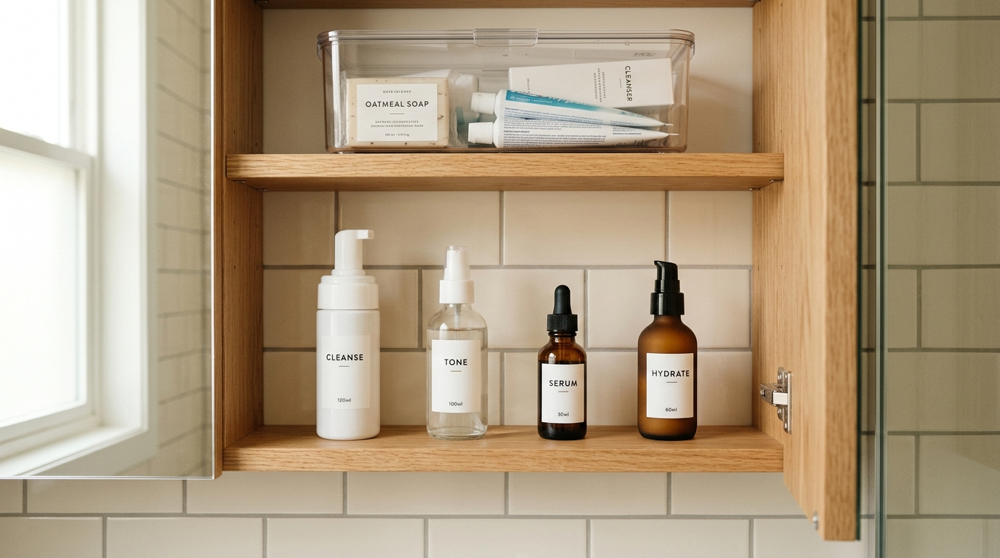

A tiny bathroom can be thoroughly organized on Sunday morning and still dissolve into frustrating clutter by Wednesday night.
The sequence is familiar to anyone living in an apartment or compact home: you wipe down the vanity, tuck every cosmetic and bottle neatly into drawers, and admire the clear surfaces. But within two days, everyday life takes over:
- The daily face wash and facial moisturizer migrate permanently onto the sink rim
- Putting the dental floss back into the medicine cabinet requires gingerly dodging three bottles of serum
- Unopened bottles of shampoo and backup bars of soap crowd the front of the under-sink cabinet
- A hairbrush and dry shampoo sit on the toilet tank because the vanity drawer has become too jammed to slide open smoothly
When this happens, our default reaction is self-blame or space-blame. We assume our bathroom is simply too small, that we own too many toiletries, or that we need to buy an armful of trendy acrylic bins.
In reality, a tiny bathroom does not necessarily need more storage. It needs better decisions about how storage is assigned.
Effective bathroom organization is not about forcing dozens of products into tight gaps. It is about removing friction from your morning and nighttime routines so that returning an item takes less effort than abandoning it on the counter. Here are the 5 storage decisions that permanently prevent clutter in a tiny bathroom.
Why Tiny Bathrooms Become Cluttered
Small spaces have very little tolerance for poor spatial decisions. In a large master bathroom with double vanities and a linen closet, a misplaced bottle of lotion is unnoticeable. In a compact 40-square-foot apartment bathroom, that single displaced bottle triggers a domino effect across your only flat surface.
When bathrooms repeatedly collect clutter, it is almost always caused by five structural mismatches:
- Compromised Prime Real Estate: Items used twice a year take up the easiest-to-reach shelves, forcing daily items into awkward, deep corners.
- Backstock Infiltration: Unopened replacement products crowd active bottles, doubling the visual and physical volume in working zones.
- Ambiguous Category Boundaries: When drawers have no defined role, toothpaste, razors, hair ties, and first-aid creams get jumbled into a chaotic pile.
- 100% Capacity Overfill: Drawers and shelves packed to maximum density, requiring two hands to wedge an item back into place.
- Designing for an Imagined Routine: Organizing around a 10-step spa fantasy rather than what you actually reach for on a rushed morning.
This highlights the fundamental truth of small-space living: Organized is not the same as maintainable. A truly functional bathroom makes the right habit completely effortless.
Decision #1: Store by Frequency
The single most influential choice you can make in a tiny bathroom is deciding what earns prime real estate based strictly on how often you touch it.
The Core Principle:
DAILY USE → EASY REACH. Prime storage space—the eye-level medicine cabinet shelf and the top vanity drawer—is strictly reserved for items touched every 24 hours.
Why It Works
Every morning and evening, you repeat the exact same grooming motions. If grabbing your daily cleanser requires reaching around a curling iron, or if returning your deodorant means opening a lower cabinet door on your knees, you introduce friction. When daily essentials have zero physical obstacles, putting them away happens on autopilot.
What This Looks Like
- Prime Eye-Level Shelf: Your daily toothbrush, toothpaste, facial cleanser, daily serum, and deodorant. Nothing else.
- Top Vanity Drawer: Everyday hair ties, razor, contact lens supplies, and daily makeup basics in shallow open dividers.
- Secondary Lower Shelves: Weekly treatments, exfoliating scrubs, manicure tools, and hair styling tools used once or twice a week.
- Deep/High Storage: Travel toiletry bags, first-aid kits, and seasonal sunscreen.
Try This
Take inventory of the items currently in your medicine cabinet or top drawer. Count how many you touched in the last 24 hours. If an item wasn't used today, move it down or back to liberate prime space for true daily essentials.
For an in-depth look at frequency tiers, read our guide on how to organize a tiny bathroom by frequency of use and the reach zone rule.
Decision #2: Give Each Category a Home
When storage spaces have vague boundaries, clutter naturally expands. If a drawer is vaguely designated as "bathroom stuff," every family member or roommate will return items wherever they happen to land.
The Core Principle:
ONE CATEGORY → ONE CLEAR HOME. When categories are unmistakable, deciding where to put something takes zero thought.
Why It Works
Cognitive hesitation creates piles. When you finish brushing your teeth, you shouldn't have to scan four shelves to decide where the dental floss belongs. When a category has one unmistakable, bounded home, putting it away is instant.
What This Looks Like
- Dental Care: Toothbrushes, paste, floss, and mouthwash contained strictly in one cup or designated drawer slot.
- Daily Skincare: Grouped neatly together on one shelf rather than interspersed with hair sprays or prescription bottles.
- Hair Tools & Brushes: Stored in one dedicated bin or lower drawer compartment, kept separate from wet toiletries.
- Bathroom Cleaning Supplies: Confined strictly to a portable caddy under the sink, leaving zero ambiguity about where the disinfectant spray lives.
Important Note: You do not need to buy matching plastic bins for every sub-category. The category itself is the organizing system; containers are simply optional physical boundaries. Even a simple shallow cardboard divider or natural boundary accomplishes the same goal.
Try This
Pick your single most frustrating bathroom drawer. Empty it onto the counter and sort everything into 3 distinct piles (e.g., Dental, Shaving, Hair). Return them into separate, defined quadrants of the drawer with clear open space between them.
To streamline cleaning products, explore our tutorial on how to organize bathroom cleaning supplies for faster cleaning.
Decision #3: Separate Daily Items From Backups
One of the most pervasive small bathroom mistakes is storing three unopened tubes of toothpaste, four backup bars of soap, and a giant Costco shampoo refill in prime vanity drawers.

The Core Principle:
USE NOW → PRIME SPACE. USE LATER → SECONDARY SPACE. Active toiletries and backup stock serve two entirely different purposes and must never compete for the same prime shelves.
Why It Works
You only use one tube of toothpaste at a time. The other three tubes sitting beside it add zero daily value—they only create visual clutter, crowd your working room, and make grabbing the active tube more awkward. By exiling backstock to a secondary location, your everyday vanity instantly feels twice as spacious.
What This Looks Like
- Active Bottle: The single shampoo and body wash currently in your shower.
- Backup Stock: The extra unopened bottles grouped in a simple bin on the bottom shelf under the sink, in a bedroom closet, or on a high linen shelf.
- Daily Paper Products: One or two rolls of toilet paper beside the commode. The 12-pack bundle stored on the top closet shelf or in an under-bed storage container.
This is not about getting rid of supplies or practicing extreme minimalism. Buying in bulk is practical and economical—it simply requires storing backups in secondary storage so they don't suffocate your daily routines.
Try This
Walk into your bathroom with a small box. Collect every unopened bottle of lotion, spare bar of soap, and extra dental product from your medicine cabinet and vanity drawers. Move that box under the sink or into a closet. Feel how instantly your morning space opens up.
For dedicated strategies on under-sink and linen organization, see our complete guide to bathroom under-sink and linen closet organization.
Decision #4: Protect Your Working Space
There is a fundamental difference between storage capacity and usable capacity.
The Core Principle:
PACKED → FUNCTIONAL. A drawer packed to 100% capacity is structurally broken. A maintainable bathroom leaves 15% to 20% open breathing room for effortless returns.
Why It Works
When a vanity drawer is jammed edge-to-edge with products, returning a hairbrush requires two hands: one hand to hold three items down, and one hand to force the brush into the gap. On a busy morning when you are running late, you will not do that. You will set the hairbrush on the counter, and the counter clutter begins.
Leaving intentional breathing room allows you to remove and return items with one smooth, one-handed motion.
What This Looks Like
- Breathing Room in Drawers: When you open the drawer, you can see the bottom lining around each organizer bin. Nothing is piled two layers deep.
- Medicine Cabinet Gaps: Leaving an inch of clear air between bottles on the glass shelf so picking up toner doesn't knock over the eye cream.
- Clear Vanity Perimeter: Preserving a clear 12-inch landing strip around the sink basin so wet hands have space to wash without splashing toiletries.
Try This
Open your primary bathroom drawer. If you have to shuffle, press down, or rearrange anything just to slide the drawer shut, it is over capacity. Remove just two non-essential items to restore functional breathing room.
To identify habits that make small bathrooms feel cramped, explore 5 bathroom storage mistakes making your tiny bathroom look smaller.
Decision #5: Organize for Your Real Routine
Your repeated habits are valuable data. Too often, people organize their bathrooms around an idealized fantasy version of themselves—someone who spends 45 minutes performing a complex skincare ritual every evening and neatly stores 12 individual bottles into separate lidded compartments.
The Core Principle:
REAL HABITS → REAL STORAGE. Clutter on the counter is not personal failure. It is physical evidence that your storage system is fighting your real routine.
Why It Works
If an item is constantly left beside the sink—like your face wash, daily moisturizer, or contact lens case—do not scold yourself. Ask: "Why is this item refusing to go back into the cabinet?"
Almost always, the answer is friction: the cabinet door catches on the mirror, the shelf is too high, or the drawer divider is too narrow. When you align your storage with where your hands naturally move, putting things away requires zero conscious effort.
What This Looks Like
- The Realist's Counter: If you use hand lotion every single time you wash your hands, keep a simple ceramic pump on a tiny tray right by the faucet, rather than hiding it in a drawer.
- The Drop-Zone Solution: If daily essentials must sit out during an active routine, establish a dedicated, bounded landing point rather than letting them scatter across the vanity surface.
- Simplified Night Routines: Keeping the 3 items you use when exhausted right in front, rather than behind daytime cosmetics.
Try This
For the next five days, do not clean up your bathroom counter. Simply observe: which 2 or 3 items always end up left out? Redesign your storage around where those exact items naturally want to live.
To master intentional surface management, check out the bathroom landing zone rule for counter organization.
The 5-Question Bathroom Storage Test
Before putting an item away or reassigning a shelf, run it through this simple 5-question diagnostic checklist:
The Small Bathroom Decision Filter:
- □ 1. Do I use this every single day?
Yes → Prime eye/waist-level storage. No → Secondary shelf or lower cabinet. - □ 2. Does it belong to an obvious category?
Yes → Group with its family. No → Re-evaluate whether it truly belongs in the bathroom. - □ 3. Is it an active product or an unopened backup?
Active → Vanity or cabinet. Backup → Secondary backstock bin or linen closet. - □ 4. Can I grab and return it with one hand without moving other items?
Yes → Maintain layout. No → Create 15% breathing room. - □ 5. Is this where I naturally use it during my real routine?
Yes → Perfect placement. No → Move it closer to the task zone.
A Simple Tiny Bathroom Reset
You can transform your small bathroom in under 20 minutes using this realistic reset sequence without buying a single new container:
- Remove Obvious Trash (2 mins): Toss expired sunscreens, dried-up mascaras, empty shampoo bottles, and broken hair ties.
- Group Similar Categories (4 mins): Pull everything onto the countertop and gather items into 4 clear families: Dental, Skincare, Hair, and Body.
- Separate Backups (3 mins): Pull all unopened backup tubes, extra soaps, and bulk supplies into a separate box for secondary storage.
- Assign Prime Real Estate (4 mins): Place your top 5–7 daily items onto your most accessible eye-level shelf or top drawer.
- Create Breathing Room (3 mins): Spread items out so each bottle has clear air around it. If things are touching edge-to-edge, remove the least-used items.
- Test Against Real Habits (2 mins): Stand at the sink and simulate your morning routine. Does grabbing and returning your toothbrush take under 2 seconds?
- Keep Only What Works (2 mins): If an item still feels annoying to put away, shift it until the friction disappears.
For more non-structural ideas to calm a compact space, read how to make a tiny bathroom feel less cluttered without adding more storage.
When You Actually Need More Storage
SpaceSavvyLiving is built on an education-first philosophy: understand the problem first, buy storage second. However, there are scenarios where physical capacity is genuinely exhausted:
- Pedestal Sinks with Zero Built-In Storage: When an apartment bathroom has a freestanding pedestal sink, no vanity drawers, and a flat frameless mirror.
- Shared Bathrooms with High Essential Volume: When two or three people share a tiny space, and even strictly filtered daily essentials exceed available shelf area.
- Unused Vertical Wall Space: When the empty wall above the toilet or beside the doorway could easily host a slim, non-intrusive floating shelf.
Only when your items are sorted by frequency, backups are exiled, and existing storage is optimized should you consider adding physical storage tools.
Common Mistakes to Avoid
- Buying Containers Before Sorting: Buying pretty acrylic bins first locks you into arbitrary sizes before you know what actually needs storing.
- Treating the Medicine Cabinet Like a Warehouse: Jamming 30 miniature travel bottles into the medicine cabinet turns it into an avalanche waiting to happen.
- Micro-Categorizing: Creating separate bins for "morning moisturizers" and "night moisturizers" creates unnecessary friction. Keep categories broad.
- Neglecting Vertical Clearance: Storing tall spray cans on low shelves where they barely squeeze beneath the upper frame.
Quick Reference Summary
| Decision | Core Principle | Quick Test |
|---|---|---|
| 1. Frequency | Daily use gets easiest access | Did I touch this in the last 24 hours? |
| 2. Category | Similar items share one home | Would a guest know where this belongs? |
| 3. Backups | Extras move out of prime space | Is this currently open and active? |
| 4. Working Space | Leave 15–20% open room | Can I return this with one hand? |
| 5. Real Routine | Storage follows real behavior | Where does this item naturally land? |
Frequently Asked Questions
When you lack vanity drawers, rely on your vertical surfaces. Use a recessed medicine cabinet for daily essentials, add an over-the-toilet shelving unit for towels and extra supplies, and use a slim 2-tier sliding organizer under the sink to create pull-out drawer functionality.
Prime storage (eye-level medicine cabinet shelves and the top vanity drawer) should strictly hold items you touch every single day: your primary toothbrush, toothpaste, daily facial cleanser, moisturizer, deodorant, and everyday hair ties or razor. Everything else belongs in secondary or deep storage.
Keep only the single active bottle of any product in your bathroom's daily storage. Consolidate unopened backup toiletries into a dedicated "Backstock Bin" stored on a lower under-sink shelf, in a hallway linen closet, or in a fabric bin on a high closet shelf. Only open a new product when the active one is empty.
Aim to leave 15% to 20% open breathing room in active vanity drawers. When you open the drawer, items should sit in a single layer with visible margins between categories so you can grab and replace items with one hand without rearranging neighboring bottles.